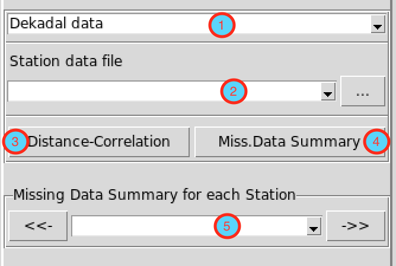
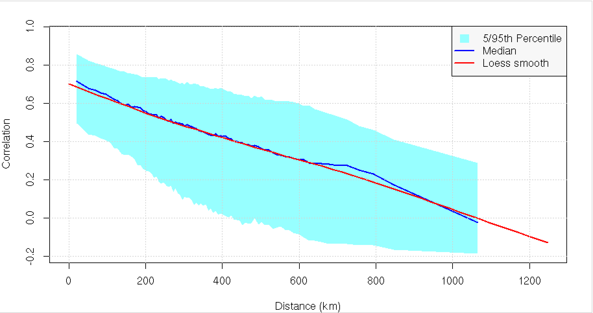
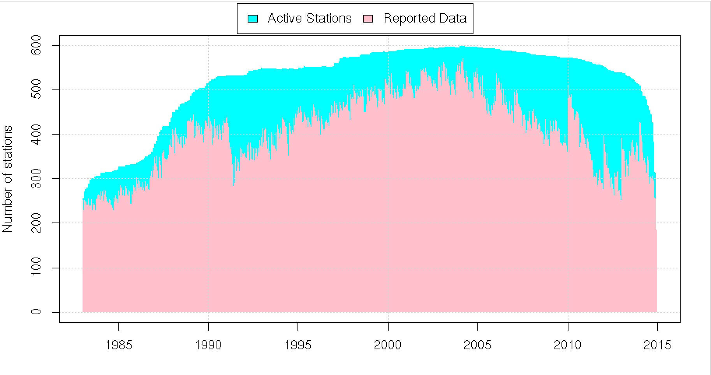
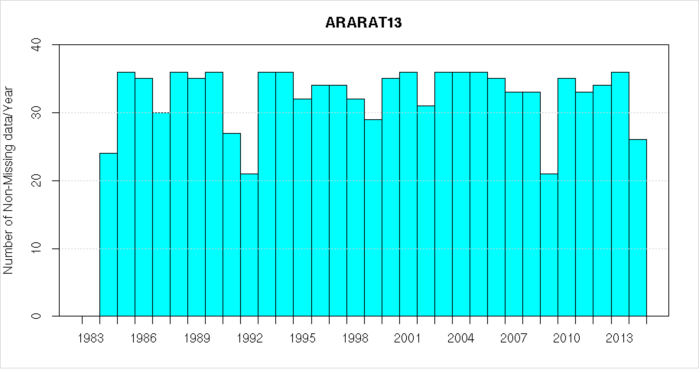

The menu provides a summary view of your data. It gives an informative graphics of the available observations and the proportion of missing values in the data.

- Select the time step of your data, there are three choices available: daily, dekadal and monthly data.
- Select the file containing the station data, if the file is not loaded yet and therefore not listed, use the button … to open it.
- Click Distance-Correlation to see the plot of correlation as a function of distance. The plot summarizes the spatial correlations for each station pair plotted against the corresponding inter-station distance.

4. Click
Miss.Data Summary to have a plot summary of the available data: the number of working stations and the proportion of missing observations.

5. Select a station from drop-down combo box to get a plot of the available data per year during the operating period of the station. You can use
<< and
>> to easily switch between stations.
